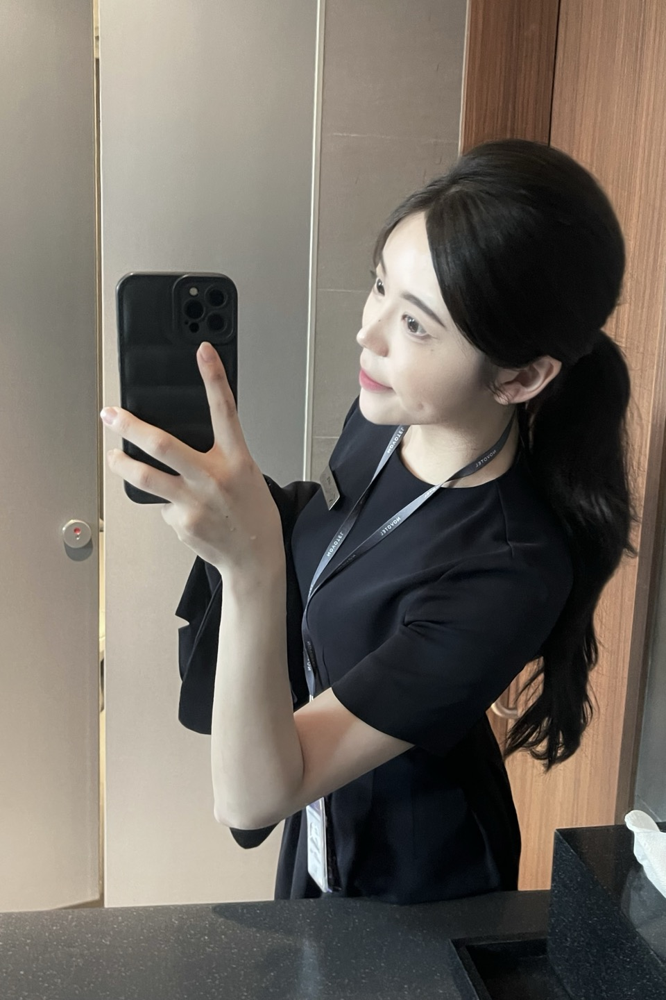
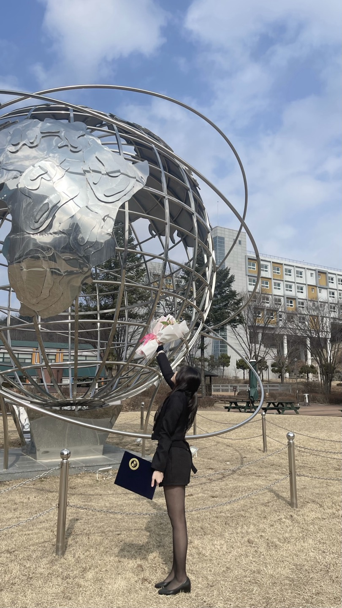
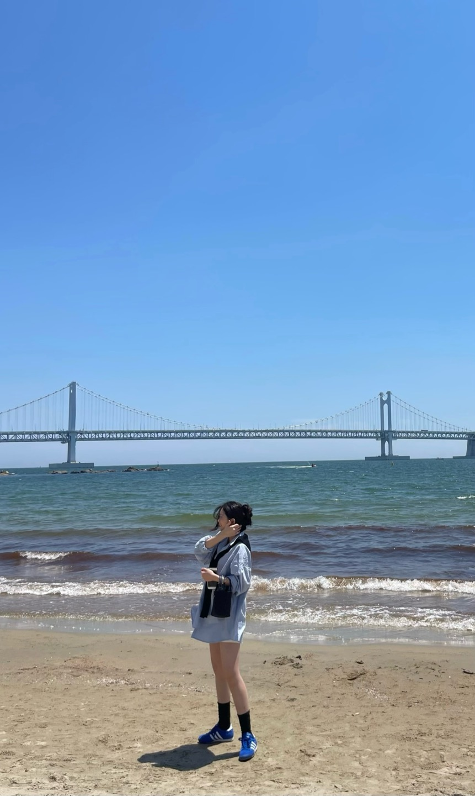
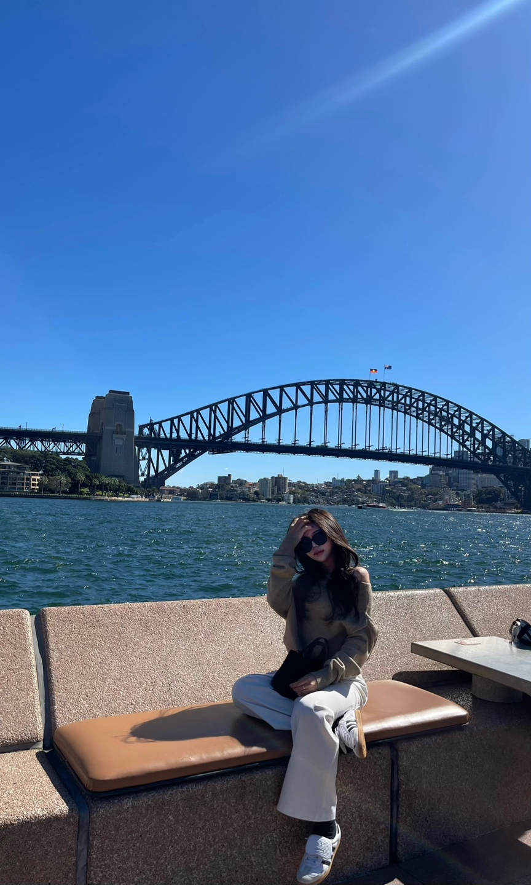

See BeyondGraphic Design
Graphic DesignNARRATIVE
Crafting better experiences through details that often go unseen —
I'm Yoonseo Park, web designer.
Crafting better experiences through details that often go unseen —
I'm Yoonseo Park, web designer.


Human-centered


Human-centered